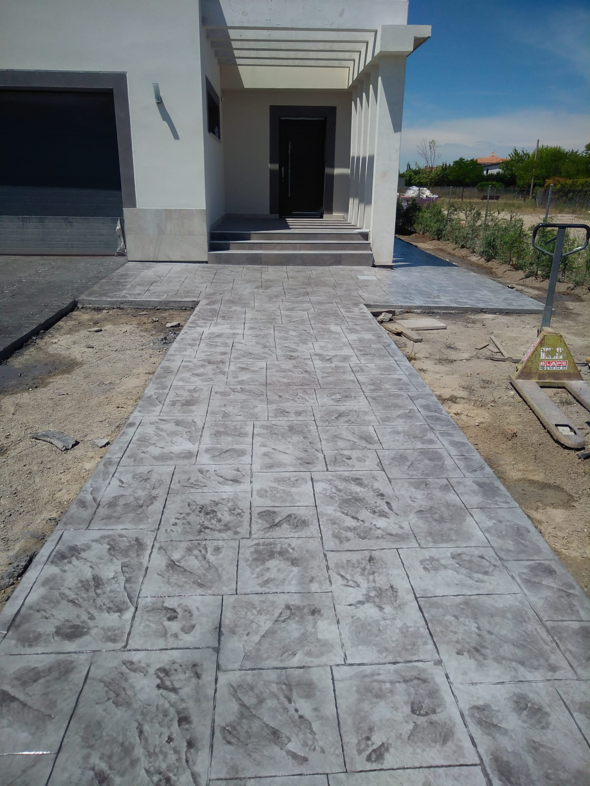
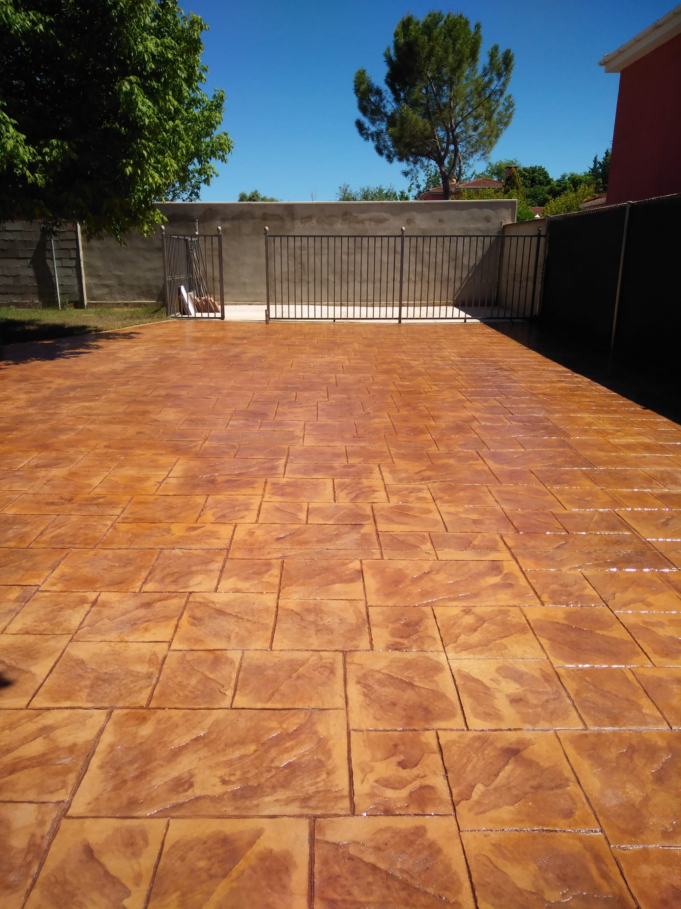
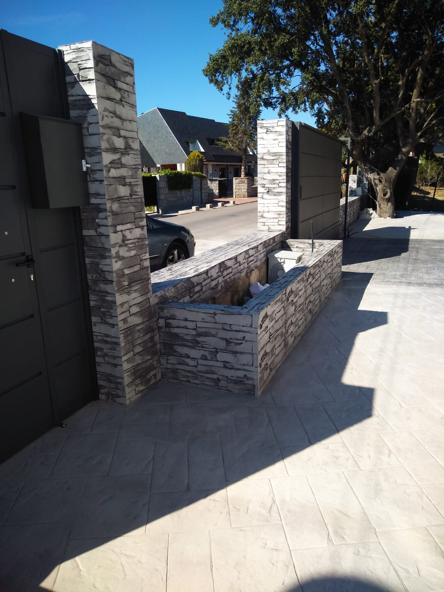
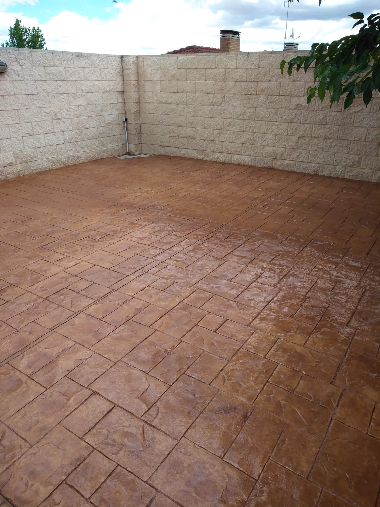
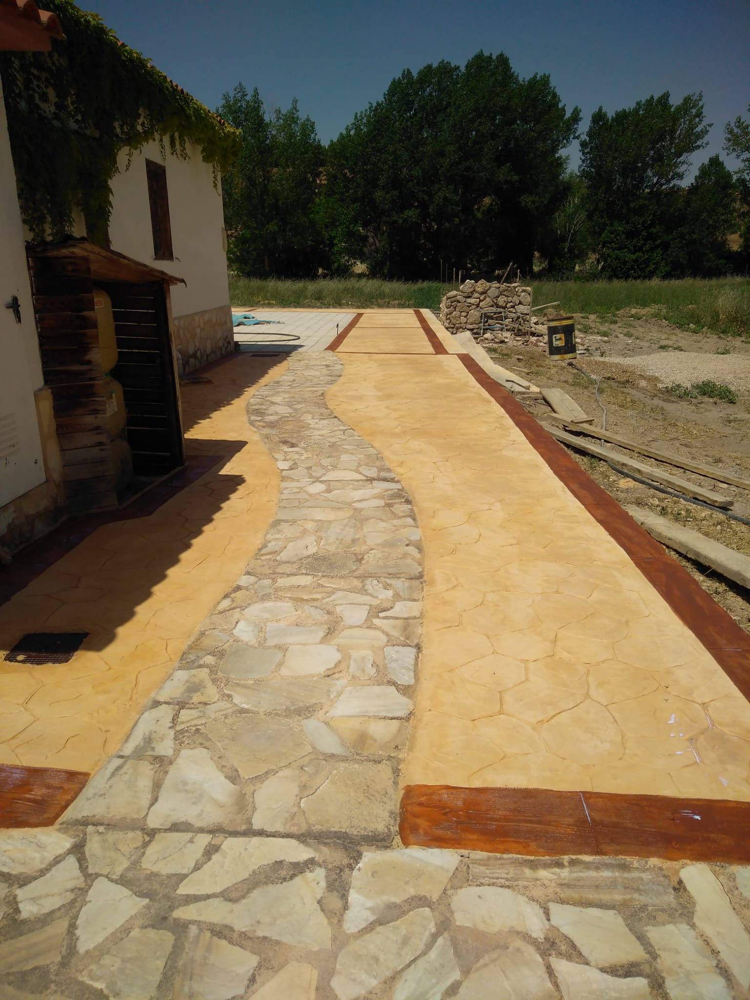
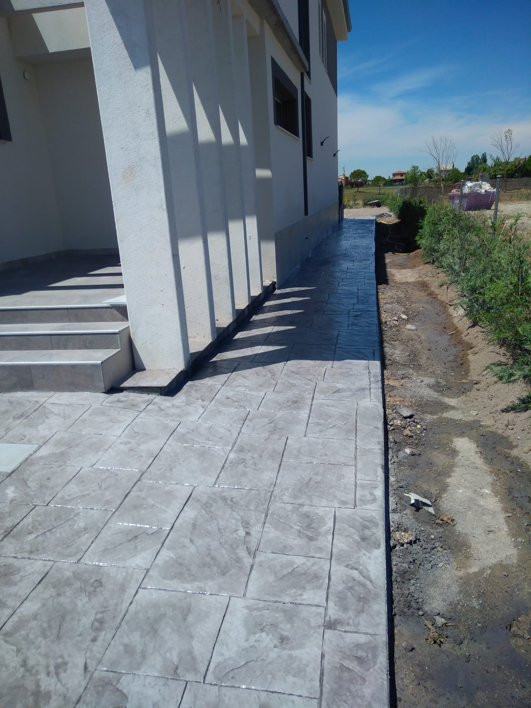
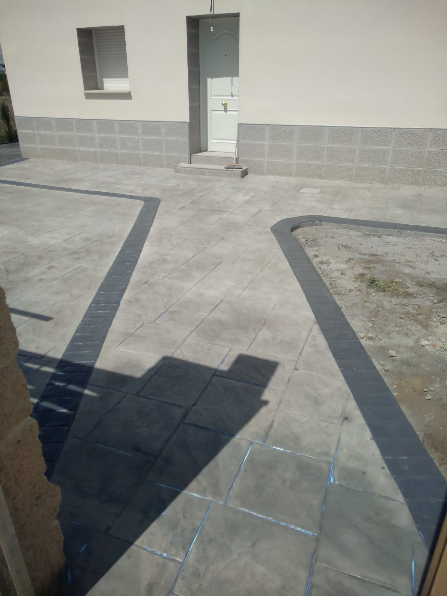

Verificam suportul
Pamant, beton existent, pante, scurgeri, acces utilaje si zone cu risc de tasare.
Amprent PNA | beton decorativ si tehnic
Amprent PNA executa suprafete decorative si tehnice cu pregatire corecta, turnare controlata, textura precisa si protectie finala. Firma are baza in judetul Olt si poate face deplasari stabilite in functie de proiect.
Contractor decorativ + tehnic
Clientul cauta un rezultat care nu se lasa, nu crapa necontrolat, nu isi pierde rapid culoarea si nu arata improvizat. De aceea Amprent PNA pune in fata lucrari reale, materiale, proces, factori de cost si un flux simplu: localitate, suprafata, poze, oferta.
De ce conteaza evaluarea
Pentru leaduri mai bune, clientul trebuie sa stie exact ce informatii trimit si ce se intampla dupa primul mesaj.
Pamant, beton existent, pante, scurgeri, acces utilaje si zone cu risc de tasare.
Grosime, armare, model, pigment, rosturi si sigilare in functie de trafic si aspect.
Estimarea initiala se face pe poze, iar pretul final se confirma dupa masuratoare.
Clientul primeste recomandari de curatare si resigilare pentru durata mai buna.
Servicii
Pentru curti, alei, terase si zone decorative unde conteaza textura, culoarea si integrarea cu arhitectura casei.
Finisaj dens pentru parcari, garaje, platforme, hale si zone cu trafic mai ridicat.
Planificare pentru acces pietonal si auto, pante, drenaj si racorduri curate.
Finisaj decorativ pentru zone de relaxare, cu accent pe aderenta si confort vizual.
Suprafete gandite pentru incarcare auto, acces repetat si curatare usoara.
Pret beton amprentat
Pretul real depinde de suprafata, grosime, pregatirea terenului, model, culoare, acces, transport, armare si localitate. Pentru o incadrare corecta, trimite poze si detalii despre lucrare.
Vezi factorii care influenteaza devizulDeviz personalizat
Proiecte in imagini
Ramanem pe imagini simple si clare: textura, culoare, finisaj si exemple de suprafete care ajuta clientul sa inteleaga rezultatul final.



Detalii
Fotografii reale, usor de parcurs, fara clipuri sau efecte care distrag atentia.




Material Lab
Betonul amprentat nu inseamna doar model imprimat. Rezultatul bun apare din combinatia dintre strat suport, grosime, armare, pigment, release powder, textura si lac de protectie.
Bun pentru alei, curti si terase unde se doreste un finisaj decorativ care ramane sobru si usor de integrat langa fatade moderne.
Inainte / dupa
Foloseste sliderul pentru a compara un detaliu de textura cu o suprafata finisata. Pentru o oferta exacta, trimite poze reale cu terenul tau.
Comparatie
Anatomia lucrarii
Localitate, suprafata, acces, pante, drenaj si tipul de trafic asteptat.
Decopertare unde este necesar, compactare, strat suport si cofraj.
Grosime adaptata proiectului, beton turnat controlat si nivelare.
Textura decorativa sau finisaj tehnic compact, in functie de destinatie.
Control al rosturilor, curatare si protectie finala pentru culoare si durabilitate.
Case wall
Lucrari explicate
Ideal pentru clienti care vor aspect de piatra, curatare usoara si continuitate vizuala in jurul casei.
Potrivit pentru acces auto, parcari si zone unde conteaza pantele, rosturile si rezistenta la uzura.
Clientul alege modelul si culoarea in functie de casa, gradina, mobilier si nivelul de aderenta dorit.
Intretinere
Zone si leaduri locale
Firma detinatoare are sediul in judetul Olt. Pentru suprafete mai mari sau lucrari planificate putem discuta deplasari in judetele apropiate. Trimite localitatea exacta pentru confirmare.
FAQ
Da, Amprent PNA este pozitionata in judetul Olt. Pentru Slatina, Caracal, Bals, Corabia, Scornicesti si alte localitati, trimite localitatea exacta si suprafata pentru confirmarea programarii si a costurilor de deplasare.
Pretul depinde de suprafata, pregatirea terenului, grosime, armare, model, pigment, acces, transport si localitate. Devizul corect se confirma dupa poze, detalii despre teren si, unde este cazul, masuratoare.
Grosimea se stabileste in functie de sol, strat suport si incarcari. Pentru trafic auto conteaza compactarea, armarea, pantele si rosturile de control, nu doar grosimea betonului.
Betonul amprentat ofera o suprafata continua, cu modele si culori decorative, fara rosturi dese in care pot aparea buruieni. Pavelele pot fi utile in alte contexte, dar depind mult de stratul suport si de tasari.
Uneori da, dar trebuie verificata starea betonului existent, fisurile, planeitatea, aderenta si cotele finale. O evaluare pe poze ajuta la prima filtrare.
Durata depinde de suprafata, pregatire, vreme si complexitate. Pentru estimare, trimite localitatea, suprafata aproximativa si cateva poze.
Se curata periodic si se resigileaza la nevoie pentru protectia culorii si a suprafetei. Zonele cu trafic intens sau expuse la saruri pot necesita atentie mai frecventa.
Urmatorul pas
Primele informatii sunt suficiente pentru o discutie clara despre pret, model, termen, pregatire si deplasare.